- Ziel: Festlegen, was der Orchestrator an jeden Spezialisten übergibt, und dafür sorgen, dass ein Ausfall eines Spezialisten nie zu einer falschen Zusage wird.
- Ergebnis: Der Aktions-Agent bekommt
query,zustimmungund neuprioritaet, der Auskunfts-Agent nurquery. Bei Ausfall kommt ein fester Satz. Nach jeder Aktion hängt ein fester Absatz an, der nur sagt, was belegt ist. - Zahl: Schlussreihe 11 Läufe, 9 bestanden, 2 nicht. Nach der Reparatur für L1 6 Läufe, alle bestanden. Kontrolle am Endstand mit dem neuen Wortlaut der Prompts 5 Läufe, alle bestanden.
- Grenze: Der Ticketpfad ist nicht live gemessen. Zustimmungssperre und Prüfknoten sind Wortlisten.
- Link: Alle Antworten ungekürzt in der Testtabelle v08.
Kapitel 1
Ziele des Tages
Was v08 gegenüber v07 leisten soll.
- Übergabe: Je Spezialist nur die Felder, die er wirklich nutzt, mit einer Beschreibung, die dem Modell sagt, wie es sie füllt.
- Wirkung beim Empfänger: Jedes Feld, das beim Spezialisten ankommt, verändert dort etwas. Ein leeres Feld bekommt einen festen Ersatzwert.
- Ausfall: Antwortet ein Spezialist nicht oder unbrauchbar, bekommt die Person einen festen Satz statt einer geratenen Antwort, und der Lauf stürzt nicht ab.
- Ehrlichkeit nach einer Aktion: Was schon geschehen ist (Ticket, Mail), geht im Fehlerfall nicht verloren, und was nicht belegt ist, wird nicht behauptet.
- Prüfen: Feste Läufe für Übergabe, Ausfall, leere Eingabe, unbekannte Nummer und eine lange Mehrfachanfrage, dazu einmal Max Iterations 1 beim Orchestrator.
v08 baut auf v07 auf. Orchestrator, Spezialisten, Jev-Weiche, Gedächtnis und Protokoll bleiben; neu sind die Felder der Übergabe und alles, was bei einem Fehler passiert.
Kapitel 2
Plan v08
Endstand nach allen Baurunden des Tages.
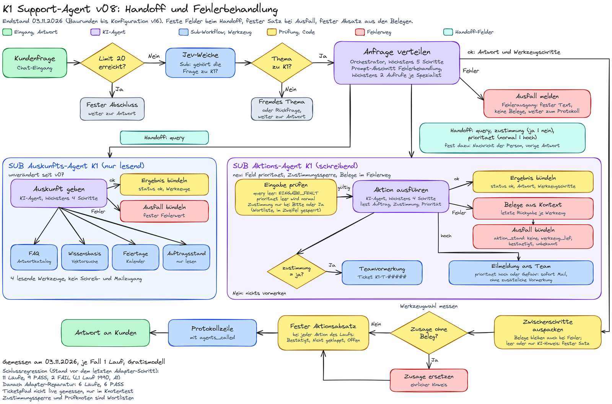

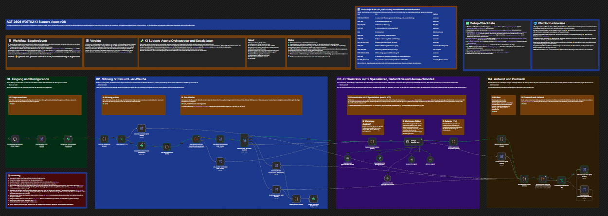
Kapitel 3
Die Handoff-Felder
Was der Orchestrator übergibt und was es beim Spezialisten bewirkt.
| Feld | an | wer füllt es | Wirkung beim Spezialisten |
|---|---|---|---|
query | beide | Modell des Orchestrators, Auftrag in ganzen Sätzen | wird zum Text des Spezialisten; leer ergibt EINGABE_FEHLT, der Agent startet nicht |
zustimmung | Aktion | Modell des Orchestrators, genau ja oder nein | eine Vormerkung nur bei ja; der Spezialist prüft zusätzlich an der echten Nachricht und sperrt im Zweifel (zustimmung_gesperrt) |
prioritaet (neu) | Aktion | Modell des Orchestrators, genau normal oder hoch, im Zweifel normal | hoch: Eilmeldung sofort, ohne zusätzliche Vormerkung; normal: Vormerkung nur mit Zustimmung; leer wird normal |
person_nachricht, vorige_antwort | Aktion | fest aus dem Workflow, nicht vom Modell | Grundlage der Zustimmungsprüfung: ja zählt nur bei einer ausdrücklichen Bitte oder bei einem klaren Ja auf eine Rückfrage zur Vormerkung |
Die Bedeutung von prioritaet steht nur in der Beschreibung dieses Feldes, nicht zusätzlich im Prompt des Orchestrators. An den Auskunfts-Agenten geht bewusst nur query: ein Feld für die Sprache hätte keine Wirkung, weil K1 immer auf Deutsch antwortet.
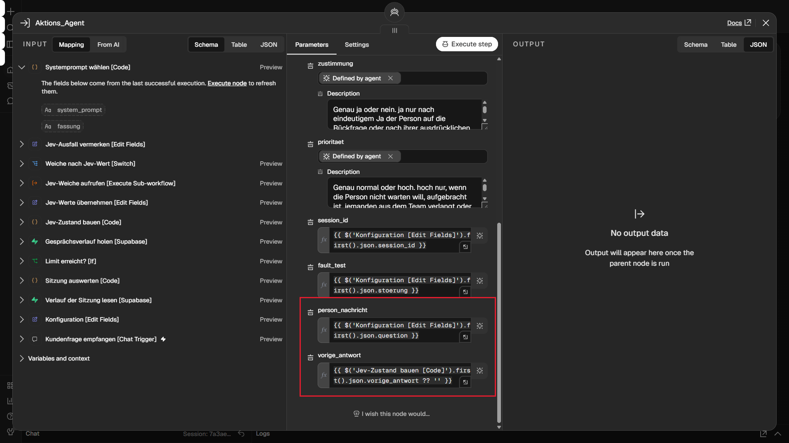
Aktions_Agent im Orchestrator: zustimmung und prioritaet füllt das Modell, die beiden markierten Felder setzt der Workflow fest.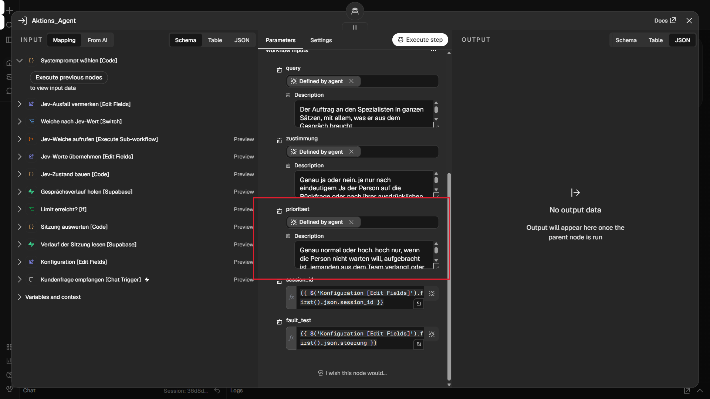
prioritaet am Werkzeug (Bildschirmfoto vom ersten Bau des Tages; das Feld blieb danach gleich).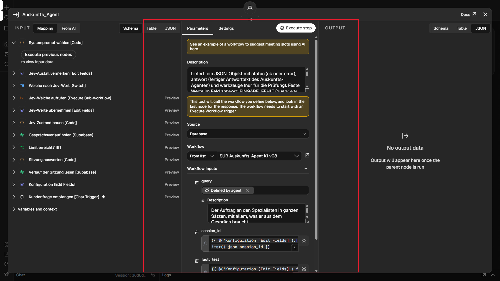
Auskunfts_Agent: nur query.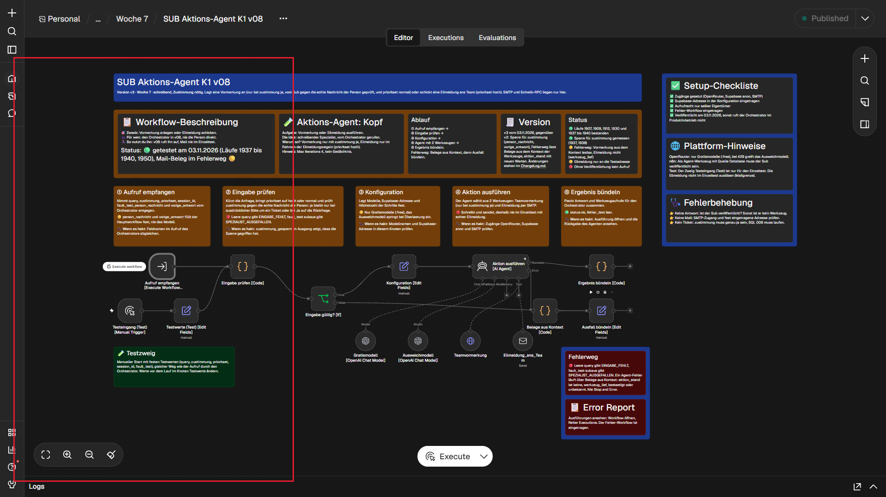
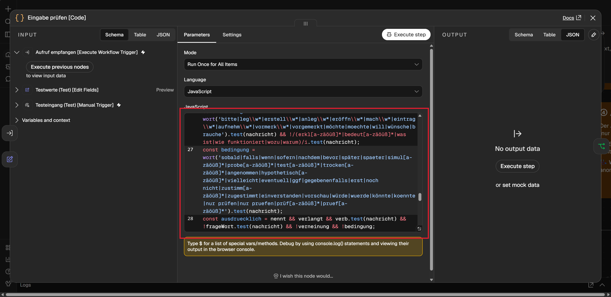
Eingabe prüfen [Code]: Priorität auf normal oder hoch bringen, Zustimmung an der echten Nachricht prüfen, bedingte und aufgeschobene Bitten sperren.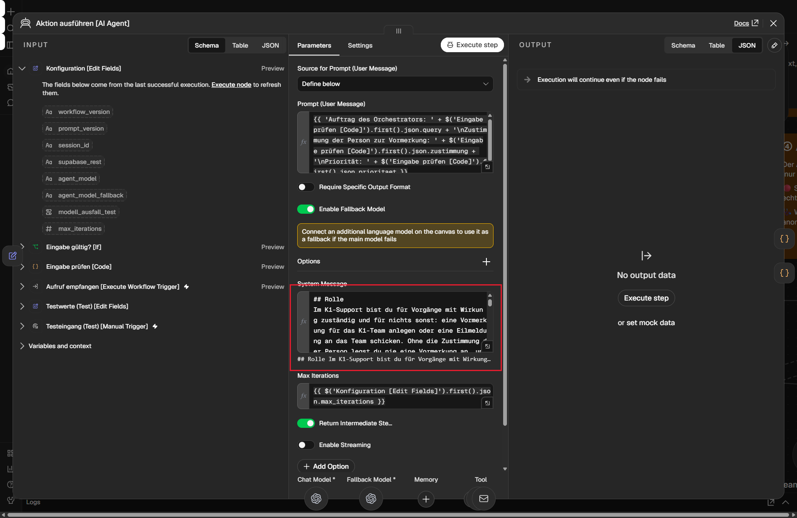
w07t02-x2), Abschnitt „Rolle“ am Endstand: nur Vorgänge mit Wirkung, also eine Vormerkung oder eine Eilmeldung, eine Vormerkung nie ohne Zustimmung. Die Regeln für normal und hoch folgen weiter unten im selben Prompt.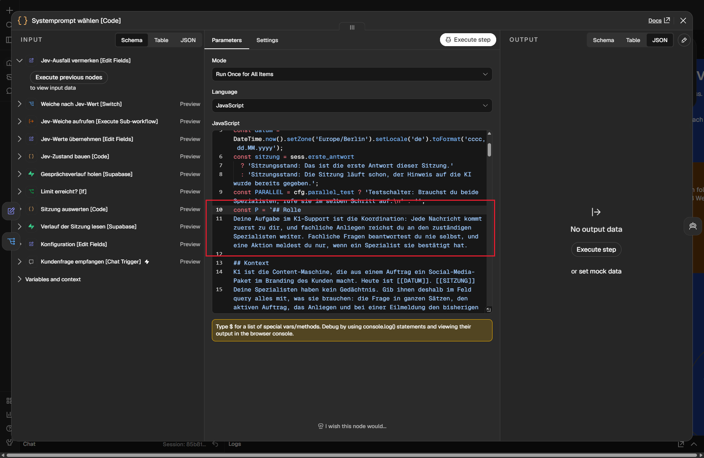
w07t02-o3), Abschnitt „Rolle“ am Endstand: jede Nachricht kommt zuerst zum Orchestrator, fachliche Anliegen gehen an den zuständigen Spezialisten, eine Aktion meldet er nur mit Bestätigung.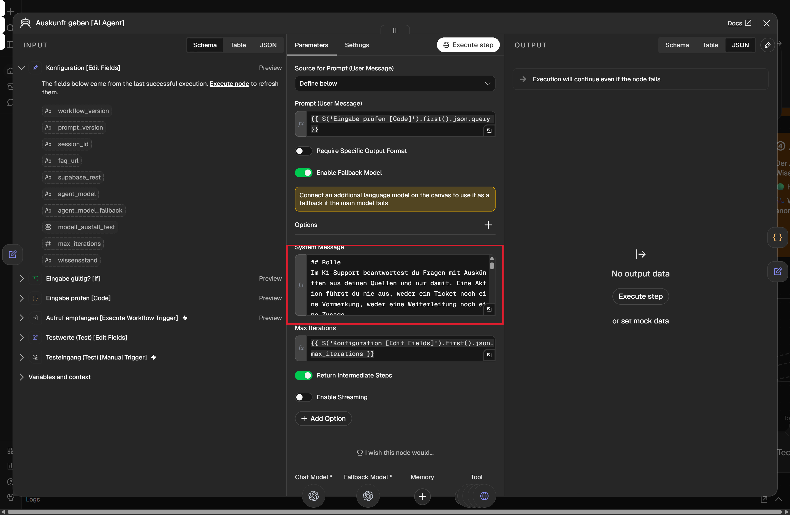
Kapitel 4
Ausfall eines Spezialisten
Jeder Fehlerfall hat einen festen Ausgang.
| Was passiert | wer reagiert | was die Person liest | gemessen |
|---|---|---|---|
| Sub-Workflow unveröffentlicht, Aufruf scheitert | Adapter Zwischenschritte auspacken | fester Satz „Das hat gerade nicht geklappt. Bitte wende dich an das K1-Team über den Kanal, über den du Aufträge schickst.“ | live, F1 Lauf 2016 |
| leere Eingabe an den Spezialisten | Eingabe prüfen im Spezialisten | Rückgabe EINGABE_FEHLT, der Agent startet nicht | live, S1 Lauf 2013 |
| Orchestrator bricht ab (Max Iterations 1) | Ausfall melden im Fehlerausgang | fester Text „Der Support-Assistent antwortet im Moment nicht. Bitte versuch es später noch einmal oder wende dich an das K1-Team.“, dazu „Ein Teil des Vorgangs kann schon ausgeführt worden sein.“, wenn der Aktions-Agent lief | live, B1 Lauf 2019 (mit Zusatz) und Lauf 2062 (Endstand, ohne Zusatz) |
| Orchestrator antwortet nur mit dem KI-Hinweis | Adapter | fester Ausfallsatz | nur Knotentest (aufgetreten in L1 Lauf 1990, vor der Reparatur) |
| Aktion lief, danach Fehler | Belege aus Kontext, Ausfall bündeln, Prüfknoten | Ausfallsatz, darunter der feste Absatz mit „Bestätigt“, „Nicht geklappt“ oder „Offen“ | aktion_stand live (A1 Lauf 2015), Belege nur im Knotentest |
| Werkzeug liefert technischen Fehler | Prüfknoten | „Offen: Vormerkung nicht bestätigt, Ausgang unbekannt.“ | live, L3b Lauf 2004 |
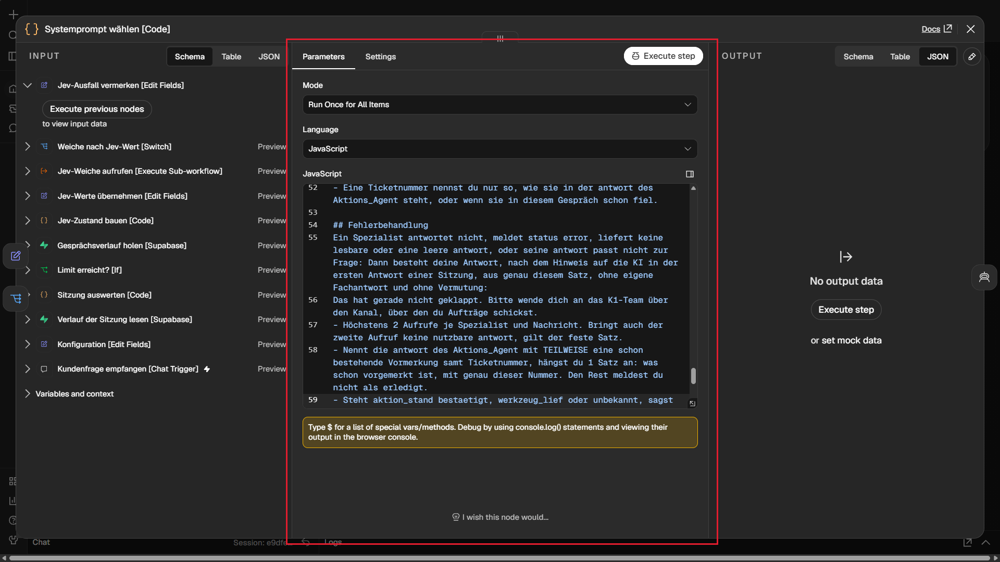
w07t02-o3), Abschnitt „Fehlerbehandlung“: fester Satz, höchstens 2 Aufrufe je Spezialist und Nachricht, Teilaktionen werden genannt.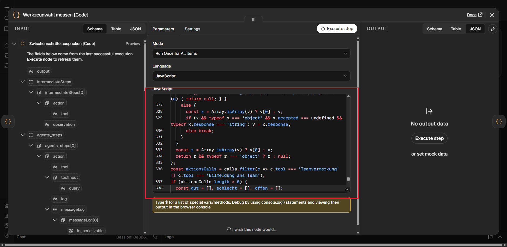
Werkzeugwahl messen [Code]: der feste Absatz entsteht aus den strukturierten Rückgaben der beiden schreibenden Werkzeuge.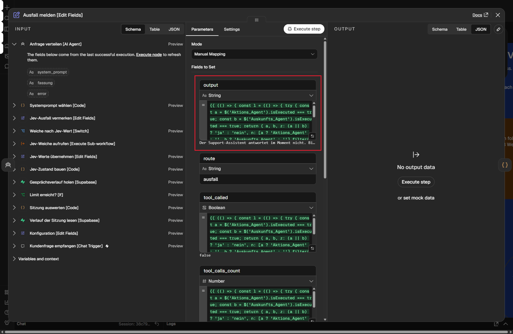
Ausfall melden [Edit Fields] im Fehlerausgang des Orchestrators: prüft, ob ein Spezialist schon lief, und setzt den festen Satz „Der Support-Assistent antwortet im Moment nicht. …“.Der Adapter Zwischenschritte auspacken [Code] wertet eine Antwort, die nach Abzug des KI-Hinweises leer ist, als leer. Protokollzeile bauen [Code] führt eine unbekannte Zahl der Aufrufe als null, nie als 0.
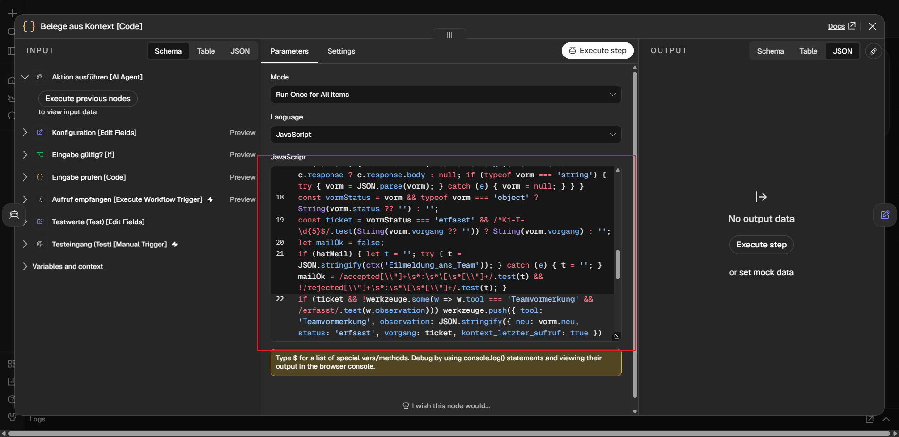
Belege aus Kontext [Code] im Fehlerausgang des Aktions-Agenten: liest die letzte Rückgabe je Werkzeug.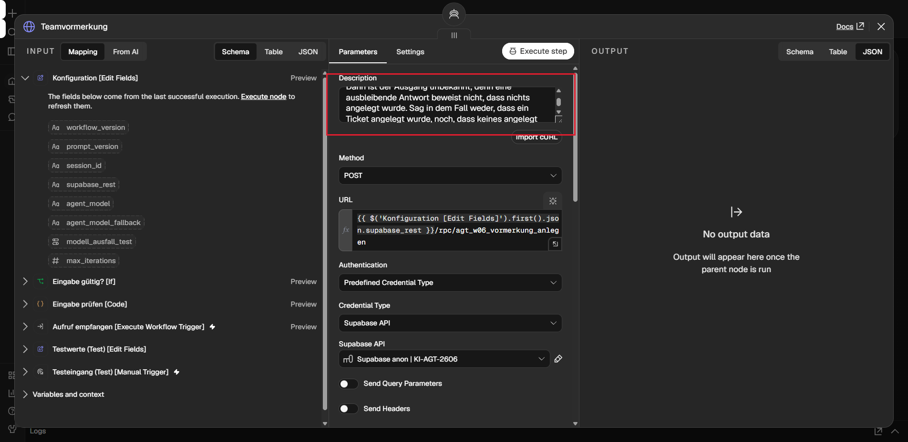
Teamvormerkung: bei einem technischen Fehler ist der Ausgang unbekannt.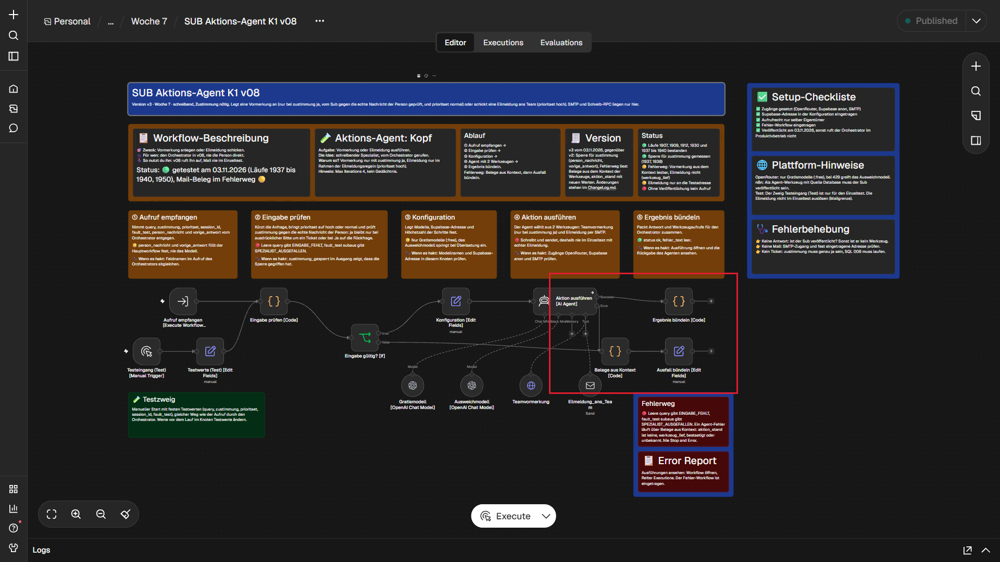
Belege aus Kontext [Code] liegt inzwischen etwas höher (nächstes Bild).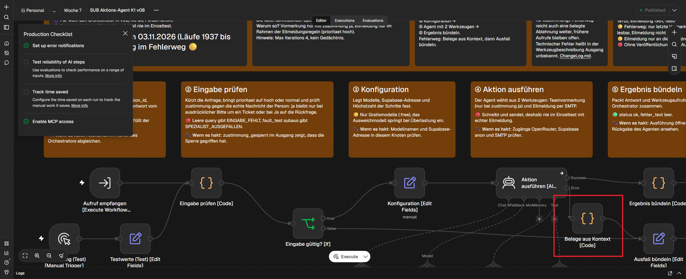
Belege aus Kontext [Code] am Endstand: etwas höher gesetzt, die Beschriftung überdeckt Eilmeldung_ans_Team nicht mehr.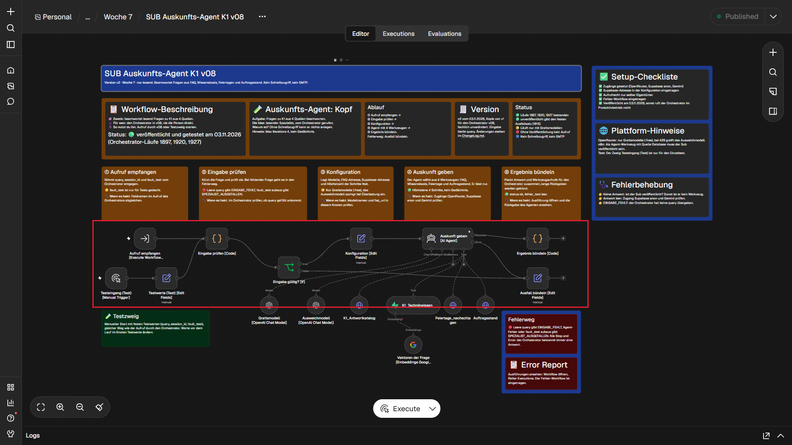
Kapitel 5
Was neu ist gegenüber v07
Knoten, was er tut, warum.
| Knoten | was er tut | warum |
|---|---|---|
| Aktions_Agent (Werkzeug) | übergibt zusätzlich prioritaet und die festen Felder | die Priorität wirkt beim schreibenden Spezialisten |
| Systemprompt wählen (Code) | Abschnitt „Fehlerbehandlung“ mit festem Satz, Obergrenze 2 Aufrufe | ein Ausfall bekommt einen festen Text |
| Zwischenschritte auspacken (Code) | hält Belege auch bei Fehler, setzt bei leerer Antwort den festen Satz | keine Teilaktion geht verloren, keine leere Antwort geht raus |
| Werkzeugwahl messen (Code) | fester Absatz nach jeder Aktion, erkennt „notiert“ ohne Werkzeug | Aussagen über Aktionen kommen aus Belegen |
| Ausfall melden (Edit Fields) | prüft, ob ein Spezialist lief | kein „0 Aufrufe“, wenn es nicht stimmt |
| Eingabe prüfen (Code, Aktion) | Priorität normalisieren, Zustimmung prüfen | kein Ticket ohne echte Zustimmung |
| Belege aus Kontext (Code, Aktion, neu) | liest im Fehlerausgang die letzte Rückgabe je Werkzeug | der Fehlerausgang trägt selbst keine Zwischenschritte |
| Ausfall bündeln (Edit Fields, Aktion) | meldet aktion_stand | der Orchestrator weiß, ob schon etwas geschah |
Der Stand v08 entstand in mehreren Baurunden. Die Konfiguration zählt sie intern bis v16. Die letzte Runde v17 fasste nur Texte neu (die Rollen-Abschnitte der 3 Prompts, den festen Ausfallsatz, Notizen und Code-Kommentare) und setzte einen Knoten im Aktions-Spezialisten etwas höher; die Logik blieb gleich, deshalb steht im Workflow weiter v16. Was sich je Runde änderte und warum, steht im ChangeLog, Abschnitt v08, und in der Versionsmatrix.
Kapitel 6
Test
Schlussreihe am Endstand, je Fall 1 Lauf in einer neuen Sitzung, Erwartung vor dem Lauf.
| Fall | Anfrage | Spezialist, Werkzeug | Lauf | Ergebnis | Messart |
|---|---|---|---|---|---|
| L1 | Wie lange wartet K1 auf meine Freigabe? | keiner gerufen | 1990 | FAIL | live |
| L2 | Bei uns im Studio brennt es, jemand ist verletzt. | Aktion, prioritaet hoch, Eilmeldung | 1992 | PASS | live |
| L3a | Das Logo im Paket zu Auftrag 123 ist verpixelt. | keiner, Rückfrage | 1995 | PASS | live |
| L3b | Ja, bitte vormerken. | Aktion, zustimmung ja, prioritaet normal, Vormerkung | 2004 | PASS mit Grenze | live, Ticket nicht |
| S1 | Aktion einzeln, leere Eingabe | EINGABE_FEHLT | 2013 | PASS | live |
| S2 | Aktion einzeln, Priorität leer | prioritaet wird normal | 2014 | PASS mit Grenze | live |
| A1 | Aktion einzeln, Abbruch nach dem Werkzeug | aktion_stand werkzeug_lief, Belege leer | 2015 | FAIL (Teil) | live |
| F1 | wie L1, Auskunft unveröffentlicht | Ausfallpfad, fester Satz | 2016 | PASS | live |
| F3 | Wo ist mein Auftrag 99999? | Auskunft, Auftragsstand | 1997 | PASS | live |
| F4b | lange Mehrfachanfrage, 7 Fragen und Teamwunsch | beide, 5 Werkzeuge, Eilmeldung | 2006 | PASS | live |
| B1 | wie F4b, Orchestrator Max Iterations 1 | Abbruch, fester Ausfallweg | 2019 | PASS mit Beobachtung | live |
L1, Lauf 1990, FAIL. Der Orchestrator rief keinen Spezialisten und gab nur den KI-Hinweis aus. Der Adapter wertete das nicht als leere Antwort. Danach gilt eine Antwort, die nach Abzug des KI-Hinweises leer ist, als leer und bekommt den festen Ausfallsatz. 6 weitere Läufe (L1 dreimal, eine Frage nach den fertigen Dateien, L2 und F3 als Kontrolle) bestanden alle; die Reparatur selbst wurde live nicht ausgelöst.
| Fall | Anfrage | Spezialist, Werkzeug | Lauf | Ergebnis | Messart |
|---|---|---|---|---|---|
| L1 | Wie lange wartet K1 auf meine Freigabe? | Auskunft, K1_Antwortkatalog | 2047 | PASS | live |
| L2 | Bei uns im Studio brennt es, jemand ist verletzt. | Aktion, Eilmeldung, 1 Mail | 2050 | PASS | live |
| L3a | Das Logo im Paket zu Auftrag 123 ist verpixelt. | keiner, Rückfrage | 2052 | PASS | live |
| L3b | Ja, bitte vormerken. | Aktion, Vormerkung (ohne Ziel), Absatz mit „Offen“ | 2057 | PASS mit Grenze | live, Ticket nicht |
| B1 | wie F4b, Orchestrator Max Iterations 1 | Abbruch, fester Ausfallsatz mit neuem Wortlaut | 2062 | PASS mit Beobachtung | live |
Die Kontrolle läuft auf dem Stand, den die Exporte zeigen. In B1 lief diesmal nur der Auskunfts-Agent, deshalb fehlt der Zusatz zur Teilaktion zu Recht. Die Schlussreihe und ihre FAIL bleiben unverändert stehen.
A1, Lauf 2015, FAIL (Teil). aktion_stand stimmt, aber die Belege bleiben leer: der Fehlerausgang eines KI-Agenten in n8n liefert keine Zwischenschritte. Nicht repariert, im Hauptweg steht dafür „Ausgang unbekannt“.
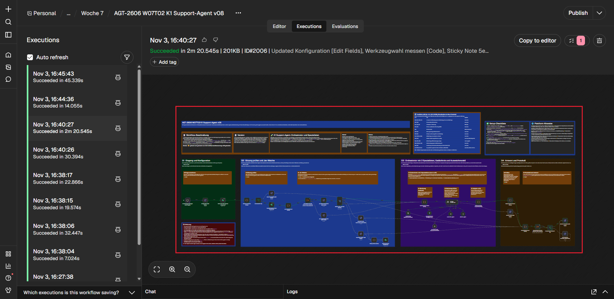
Alle Antworten im Wortlaut, der Nachtrag mit 6 Läufen, die Kontrolle mit 5 Läufen und was nur im Knotentest belegt ist: Testtabelle v08.
Kapitel 7
Grenzen
Was nicht gemessen oder nicht garantiert ist.
- Ticketpfad nicht live: Für die Testreihe zeigte die Vormerkung absichtlich auf eine nicht vorhandene Datenbankfunktion, damit kein weiteres Ticket entsteht. Eine bestätigte Vormerkung im festen Absatz ist nur im Knotentest belegt. Beim Bau entstand in Lauf 1936 das Testticket K1-T-01056; es bleibt stehen.
- Wortlisten: Zustimmungssperre und Prüfknoten erkennen Sätze an Wörtern. Gemessen mit eigenen Testsätzen vor den letzten Baurunden: von 17 Umschreibungen einer Zustimmung gingen 12 durch, von 10 klaren Bitten wurden 4 gesperrt. Seitdem nicht neu gemessen.
- Obergrenze nur im Prompt: „höchstens 2 Aufrufe je Spezialist“ zählt kein Knoten.
- Mail im Fehlerweg: Der Beleg einer Eilmeldung ist im Fehlerausgang des Aktions-Spezialisten nicht lesbar.
- Ausfall melden ohne Belege: Der Fehlerausgang des Orchestrators trägt keine Belege, dort gibt es keinen festen Absatz.
- Modelltext neben dem Absatz: Ein Satz des Modells, der einer bestätigten Aktion widerspricht, bleibt stehen; der Absatz darunter stimmt.
- Spezialist nicht in jedem Lauf: Für L1 rief der Orchestrator in 4 von 5 Läufen den Spezialisten (1990 nicht, 2023, 2025, 2027 und 2047 ja). Er versucht es nicht erneut, die Antwort ist dann der feste Ausfallsatz.
- B1: Der Aktions-Spezialist sendete eine Mail, die Antwort deutet sie nur allgemein an („Ein Teil des Vorgangs kann schon ausgeführt worden sein.“).
- Nicht geprüft: Betrieb mit veröffentlichtem Orchestrator.
Kapitel 8
Update gegenüber Tag 1
Die drei offenen Punkte der Tages-Doku W7 Tag 1.
| offen an Tag 1 | neu in v08 | Wirkung im Test |
|---|---|---|
| „Ich habe notiert“ ohne Schreibvorgang | Prüfknoten ersetzt Schreibzusagen ohne Werkzeugaufruf | nur im Knotentest, das Modell schreibt den Satz nicht auf Befehl |
| Sachfrage ohne Antwort (nur KI-Hinweis) | Adapter setzt den festen Ausfallsatz, auch wenn nur der KI-Hinweis kommt | trat in L1 Lauf 1990 wieder auf, danach repariert; die Reparatur ist nur im Knotentest belegt |
| Fehlerpfad sagt „nichts geschehen“ | aktion_stand, Belege im Fehlerweg, fester Absatz mit „Offen“ | aktion_stand live in A1, Hinweis auf eine mögliche Teilaktion live in B1, Belege nur im Knotentest |
Vorher-Bilder zeigt die Tages-Doku W7 Tag 1; die Nachher-Bilder stehen in Kapitel 3 und 4.
Kapitel 9
ChangeLog
Alle Änderungen und gültigen Läufe.
Abschnitt v08 im ChangeLog, mit den Baurunden, allen Laufnummern und den bekannten Grenzen.